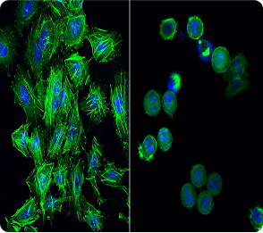
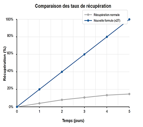
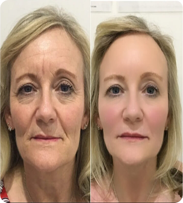
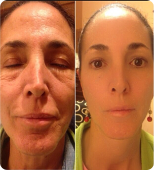

RAJEUNIR GRÂCE À L'OR EN SEULEMENT
10 À 15 MINUTES PAR JOUR
QUEL élément méconnu tue votre jeunesse en ce moment ?
Comment ééviter cela avant qu’il ne soit trop tard ?
Pourquoiles sociétés pharmaceutiques tentent-elles d’interdire cela devant les tribunaux américains ?

«LES GRANDES MARQUES DE COSMÉTIQUES DE LUXE TENTENT DE BLOQUER LA RÉVOLUTION DÉCOUVERTE PAR UNE ÉQUIPE DE CHERCHEURS DE HARVARD,
QUI CHANGE COMPLÈTEMENT L’INDUSTRIE DE LA BEAUTÉ»
Pourquoi? Parce qu’ils ont trouvé un moyen de faire paraître votre peau 10 à 15 ans plus jeune… sans une seule injection… sans chirurgie… et sans une longue récupération douloureuse.
Les résultats sont tellement incroyables que 87 % des femmes qui ont essayé cette méthode jurent qu’elles ne retourneront jamais aux méthodes traditionnelles de rajeunissement.
Imaginez vous vous réveillez le matin, vous vous regardez dans le miroir et vous voyez que les rides profondes autour de vos yeux, qui vous faisaient paraître fatiguée pendant des années, commencent à disparaître. Les plis nasogéniens, qui vous empêchaient de sourire sur les photos, deviennent presque invisibles. Et la peau relâchée, qui révélait votre âge même sous le maquillage, s’efface, laissant place à une peau ferme et éclatante.
Un des experts de l’Association Américaine des Cosmétologues a récemment déclaré:

HACE 4.000 AÑOS QUE SE SABE
Dans 2 minutes, vous saurez pourquoi cette matière précieuse pourrait être la clé de votre seconde jeunesse…
Regardez cette photo…
Regardez bien. Cette femme reçoit chaque matin des compliments de ses collègues, qui pensent qu’elle a le même âge qu’eux. Les amies de sa fille la prennent souvent pour sa grande sœur. Et récemment, une vendeuse dans une boutique a refusé de croire qu’elle avait plus de 50 ans…
⚠️ D’après vous, quel âge a-t-elle vraiment ?
Dans les 60 prochaines secondes, je vais vous révéler un secret qui vous permettra de susciter la même admiration autour de vous.
Imaginez: vous entrez dans une pièce, et tout le monde se tait… les gens ne peuvent pas détourner leur regard, cherchant à percer votre secret...
Ce qui a commencé comme une petite expérience dans un laboratoire de Harvard est devenu un véritable cauchemar pour les géants de la cosmétique, qui gagnent des milliards grâce à vos peurs et vos insécurités…
Mais ils ont accidentellement découvert quelque chose
D’INCROYABLE
Dans notre peau, il existe une molécule spéciale appelée TGF-16, qui contrôle le renouvellement des cellules. Mais à un certain moment de la vie – que vous ayez 25 ans, 35 ans ou même 50 ans – cette molécule commence à ralentir le renouvellement naturel de la peau, comme si quelqu’ un avait tiré sur le frein d’urgence de votre jeunesse.
Mais le plus choquant ?
Cela n’a rien à voir avec votre génétique, votre alimentation ou vos soins de la peau ! Vous pouvez dépenser des milliers de dollars dans les meilleures crèmes, suivre des traitements coûteux, faire attention à votre alimentation – mais tant que cette molécule reste active, votre peau continuera à vieillir
C’est pourquoi le Dr Yang et son équipe ont cherché un moyen de redémarrer ce mécanisme naturel de rajeunissement.
Après des centaines d’expériences, ils ont fait une découverte incroyable : une forme spécifique d’or peut désactiver la molécule TGF-16 et relancer le processus de renouvellement cellulaire.
Cette découverte a tout changé. En laboratoire, la peau a commencé à se régénérer 27 fois plus rapidement. Les rides ne faisaient pas que diminuer –elles disparaissaient.
Mais lorsque les résultats de cette étude sont tombés entre les mains des grandes entreprises cosmétiques, cela a provoqué une véritable panique . Car cette découverte menaçait leur business de plusieurs milliards , basé sur des solutions temporaires…
Pourquoi l’or ?


« J'ai toujours été sceptique face aux promesses de rajeunissement – mon métier m'a appris à exiger des preuves. Mais quand mon mari a pleuré pour la première fois depuis des années en voyant les résultats… Quand mes collègues au tribunal ont commencé à murmurer que j'étais sûrement amoureuse, parce que ma peau brillait… J'ai compris que ça fonctionnait vraiment. Pour la première fois en 10 ans, je peux aller à des réunions importantes sans fond de teint ! »
— Salma, 49 an
« En tant que scientifique, j'ai étudié chaque composant de la formule avant de commencer l'expérience. Ces trois dernières années, j'ai évité de faire des présentations – à cause des taches pigmentaires et des rides profondes, je me sentais mal à l'aise devant mes étudiants et collègues. Après un mois d'utilisation de la formule dorée, mes doctorants m'ont demandé si je m'étais mariée – tellement mon apparence avait rajeuni. Et récemment, à une conférence internationale, on m'a prise pour une doctorante ! »
— Eman, 52 ans
« Pendant 15 ans, j'ai été prisonnière de l'industrie de la beauté – des crèmes coûteuses avec des particules d'or aux traitements laser douloureux. J'avais perdu non seulement l'espoir, mais aussi environ 2 000 dollars. Quand mon amie m'a parlé de la formule du docteur Young, je n'y ai pas cru. Mais les résultats… Ce que la formule dorée a fait en 30 jours, les meilleurs cosmétologues de Beverly Hills n'ont pas pu le faire en des années. Maintenant, chaque matin, je cours avec impatience vers le miroir – juste pour m'assurer que ce n'est pas un rêve ! »
— Fatima , 47 ans
Les chiffres qui ont fait taire les critiques...
 Les rides profondes ont diminué à un niveau comparable à celui du Botox
Les rides profondes ont diminué à un niveau comparable à celui du Botox
Le teint s'est uniformisé mieux qu'après une série de peelings au laser
L'ovale du visage a été redéfini comme si elles avaient perdu 10 ans
Le plus impressionnant - chez 56 % des participantes, les cellules de la peau ont commencé à se renouveler 27 fois plus rapidement.
C'est comme transformer un vieux réveil mécanique en une montre Apple Watch - à quel point les progrès ont été spectaculaires.
Imaginez : vous vendez des crèmes premium à 300 $ le pot. Vos clientes reviennent année après année pour de nouvelles doses, car elles ne voient que des améliorations temporaires. Et voilà qu'une formule apparaît, rajeunissant la peau au niveau cellulaire - et ce, en une seule cure.
Pourquoi les géants de la cosmétique tentent-ils d'arrêter la formule de jeunesse du Dr Yang ?

- d'une récente conférence privée à Harvard, un événement sans précédent a eu lieu. Les représentants des plus grandes entreprises cosmétiques ont quitté la salle pendant la présentation du Dr Yang sur les résultats de l'application de sa formule dorée.
- "Ils comprennent que c'est la fin de leur monopole," commente le Dr Sarah Bennett, spécialiste en médecine régénérative. "Lorsque les femmes découvriront qu'il est possible d'obtenir les résultats des procédures premium pour le prix d'une crème ordinaire, l'industrie changera à jamais."

Vous avez 10 minutes pour prendre une décision qui changera votre vie...
La création de chaque lot de Pearly Glow est un processus complexe nécessitant une précision particulière :
- La fabrication de l'or colloïdal à la concentration requise prend 21 jours. La moindre déviation du protocole - et tout le lot est rejeté
- Chaque flacon subit un test individuel dans le laboratoire du Dr Yang. L'analyse d'un échantillon prend jusqu'à 6 heures.
- Après la première publication des résultats de l'étude, les grandes entreprises cosmétiques ont commencé à acheter massivement les ingrédients nécessaires à la fabrication de la formule. Cela a créé une pénurie sur le marché.
Sur le lot actuel de 750 flacons :
- 🏫 185 sont déjà réservés par des cliniques premium
- 168 sont réservés pour les participantes à l'étude clinique qui ont vu les résultats et ont effectué une précommande
- Les flacons restants sont disponibles à la vente
- Le prochain lot ne sera disponible que dans deux mois - c'est le temps minimum nécessaire pour fabriquer et contrôler la qualité de chaque flacon.
“CE QUE VOUS OBTENEZ AUJOURD'HUI”
- Un cours complet de 30 jours de rajeunissement Pearly Glow avec la formule à base d'or colloïdal, brevetée par le Dr Yang et son équipe. Chaque flacon est scellé aux États-Unis et subit 7 contrôles de qualité.
- Un guide personnalisé étape par étape, adapté à votre type de peau et à votre âge. Contrairement aux crèmes ordinaires, où une seule instruction s'applique à toutes, ici chaque étape est adaptée spécifiquement à vos caractéristiques.
- Une consultation individuelle avec un expert qui vous aidera à maximiser les résultats.

🎁 BONUS : Les 50 premières acheteuses recevront un accès exclusif à la conférence privée du Dr Yang "7 secrets de la jeunesse éternelle", où des techniques supplémentaires pour renforcer l'effet de rajeunissement sont révélées.
COMMENT OBTENIR VOTRE FLACON DE PEARLY GLOW
- Remplissez le formulaire de commande ci-dessous dès maintenant...
- Dans les 15 minutes, un consultant personnel vous contactera...
- Il confirmera la disponibilité d'un flacon du lot actuel et le réservera pour vous
- Vous recevrez des instructions personnalisées et commencerez votre chemin vers la jeunesse dans quelques jours
Cependant, une chose est certaine, tant qu'il est possible de devenir plus beau et plus jeune, il faut agir

Prix régulier: 13800DA
Économie instantanée: 4810 DA
Garantie de 30 jours
8990 DA
SANS PAIEMENTS
D'un autre côté, vous pouvez rester là où vous êtes et ne rien faire…
C'est votre choix.
Mais, si vous avez quand même décidé…
...VOUS POUVEZ REJOINDRE CES FEMMES INCROYABLES

Je n'oublierai jamais ce jour où je suis allée retrouver ma fille à l'université. À l'entrée, un agent de sécurité m'a arrêtée et m'a fermement demandé ma carte d'étudiante. J'étais déconcertée et je n'ai pas tout de suite compris ce qui se passait. 'Sans carte d'étudiante, c'est interdit', insistait-il.Quand j'ai expliqué que j'étais là pour ma fille, il est devenu rouge et a commencé à s'excuser. Et moi... je suis restée là, souriante.
Parce que la dernière fois qu'on m'a prise pour une étudiante, c'était il y a 25 ans ! Ma fille raconte encore cette histoire à ses amies en riant. Et moi, chaque matin, je regarde avec plaisir mon reflet dans le miroir : ma peau est plus belle qu'il y a 15 ans. Les rides ont disparu, les pores se sont resserrés, et un éclat naturel est apparu. Je me sens jeune à nouveau !"
Sanaa, 44 ANS

Mon mari et moi nous préparions à célébrer notre anniversaire de mariage – 20 ans ensemble. En feuilletant nos vieilles photos, j’ai soudain réalisé que j’ai l’air plus jeune aujourd’hui que sur nos photos de mariage ! Au début, je n’en croyais pas mes yeux. Je les ai montrées à mon mari, et il a confirmé – j’ai vraiment rajeuni. Pas d’un an ou deux, mais d’au moins 15 ans ! Toutes les rides autour des yeux et de la bouche ont disparu, ma peau est devenue ferme et mes joues se sont rosies.
Pour notre anniversaire, nous avons invité tous nos amis de l’époque de notre mariage. Et vous savez quoi ? La moitié des invités n’a pas cru que 20 ans s’étaient écoulés – ils pensaient que nous nous étions trompés sur la date ! Une amie s’est même vexée, persuadée que j’avais fait de la chirurgie esthétique sans lui en parler. J’ai dû la convaincre pendant longtemps qu’il n’y avait eu aucune opération !
Sara, 44 ANS

Je suis professeur à l’université. Récemment, j’ai croisé une ancienne étudiante qui avait obtenu son diplôme il y a 10 ans. Elle m’a regardée et m’a dit : 'Madame Sofia, mais qu’est-ce qui vous est arrivé ? On dirait que vous avez rajeuni de vingt ans ! C’est impossible !' Et je lui ai répondu : 'C’est possible !' Parce que c’est vrai. Ma peau s’est complètement transformée. Toutes ces rides profondes autour des yeux, le relâchement des joues, le menton affaissé – tout a disparu.
Lors de la dernière conférence, mes collègues n’en revenaient pas que j’aie 50 ans. Ils disaient que je faisais au maximum 35 ans. Un professeur a même plaisanté en disant que j’avais trouvé la fontaine de jouvence. Et vous savez quoi ? Il n’était pas si loin de la vérité!
Fatima, 44 ANS

Dans ma famille, toutes les femmes vieillissaient prématurément. Ma mère avait l’air d’avoir 60 ans à seulement 45, et je pensais que le même sort m’attendait. À 40 ans, j’avais déjà des rides profondes, une peau sèche et terne. J’ai tout essayé – des crèmes coûteuses, des massages, des masques, des remèdes maison. Rien n’a fonctionné. Puis, j’ai eu la chance de participer à ce programme de recherche… Un mois après avoir commencé à utiliser le produit, ma sœur a fondu en larmes en me voyant. Nous ne nous étions pas vues depuis deux mois, et elle n’en croyait pas ses yeux. 'Tu ressembles à la mariée que tu étais le jour de ton mariage !' répétait-elle en pleurant. Et mon mariage, c’était il y a 15 ans !
Aujourd’hui, trois mois plus tard, je ne me reconnais plus dans le miroir. Ma peau est comme celle d’une jeune femme de 20 ans – pure, éclatante, sans une seule ride. Je n’ai plus peur de vieillir. Je sais que la science a vaincu le temps !
Anna, 44 ANS
35%
Prix régulier: 13800DA
Économie instantanée: 4810 DA
Garantie de 30 jours
8990 DA
SANS PAIEMENTS
📩Nous pouvons vous envoyer cette crème rapidement et en toute sécurité dès maintenant...
Et il se peut que cela ne dure pas éternellement
C'est pourquoi cette offre spéciale est valable uniquement ici et maintenant...
...pour les 500 prochains clients qui passeront commande immédiatement...
Pas de tracas, pas de contraintes, pas de petits caractères
Il vous suffit de laisser une demande et dans les 15 minutes⏱️ pendant les heures de travail, nous vous contacterons pour préciser tous les détails de votre commande
...VOUS POUVEZ REJOINDRE CES FEMMES INCROYABLES
Pearly Glow est fabriqué en Amérique et garantit un niveau de pureté, d'efficacité et de sécurité exceptionnel…
Recommandation:
- «Il vous suffit d'appliquer cette crème et de constater, jour après jour, avec émerveillement, comment elle vous rajeunit…»
35%
Prix régulier: 13800DA
Économie instantanée: 4810 DA
Garantie de 30 jours
8990 DA
SANS PAIEMENTS